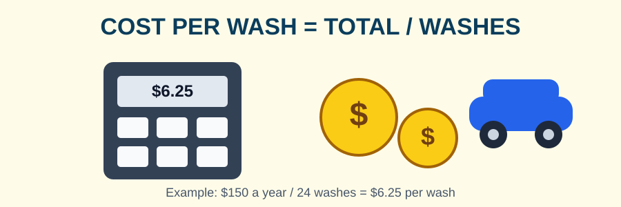

How the calculator works
Enter the total cost of the products you will use up in a year, or the cost of a kit, plus any extra costs such as water and electricity if you want to include them. Then enter how many washes you do in a year. Cost per wash = total yearly cost ÷ washes per year. This separates one-off kit costs from the soap and consumables you replace.
Calculator
Example result: (120 + 30) ÷ 24 = $6.25 per wash.
Worked example: starter kit
All prices below are illustrative examples in USD to show how the maths works. Check current local prices before you buy.
| Item | Example price | How long it lasts in this example |
|---|---|---|
| Car wash soap, 1 litre | $15 | About 20 washes at the label dilution |
| Wash mitt | $10 | One season, with careful washing |
| Two buckets | $20 | Several years |
| Microfiber towels, pack of 6 | $18 | Many washes, if washed correctly |
| Drying towel | $15 | Many washes |
| Wheel cleaner and brush | $22 | About 12 uses |
| Glass cleaner | $8 | About 20 uses |
| Interior cleaner and protectant | $18 | About 12 interior cleans |
| Starter kit total | $126 | - |
Example: $126 of kit, plus $24 of replacement soap and towels in the year = $150. At 24 washes, that is $150 ÷ 24 = $6.25 per wash. At 12 washes, the same $150 is $12.50 per wash, because the kit cost is spread over fewer washes.
Worked example: fuller kit
| Extra item | Example price | Notes |
|---|---|---|
| Foam cannon | $35 | Only if you have a pressure washer |
| Spray wax / sealant | $20 | Use after washing, as the label directs |
| Clay bar or clay mitt | $18 | Use only when paint feels rough, with lubricant |
| Tyre dressing | $12 | Avoid tread and brake parts |
| Vacuum and brushes (if buying new) | $45 | Many owners already own a vacuum |
| Extra total | $130 | Starter kit $126 + $130 = $256 in year one |
Example: $256 ÷ 24 washes = $10.67 per wash in year one. In year two, if you only replace $60 of consumables, $60 ÷ 24 = $2.50 per wash, because the durable kit is already bought.
What to include, and what to leave out
| Include | Why |
|---|---|
| Soap, cleaners, wax and dressings you use up | These are the real running costs |
| Towels and mitts you replace | They wear out and need replacing |
| Water, electricity and laundry if you can estimate them | Gives a fuller cost per wash |
| Your time, separately | Note hours, but keep money and time in separate totals |
Tips to keep costs down without cutting corners
- Measure soap to the label dilution. Overuse is the fastest way to waste money.
- Wash and reuse microfiber towels correctly instead of replacing them early.
- Buy a product only when you have a job for it. A shelf of unused bottles is not a saving.
- Protect paint regularly. A clean, protected surface is usually quicker and cheaper to wash.
- Keep a simple log: date, products used, and any product finished. Review it after 3 months.
For more car care guides, see Car Care Guy at carcareguy.com.